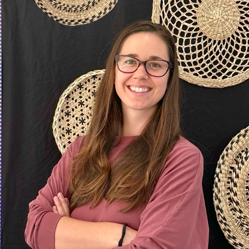

Language Lab Vision & NUI Mission. The vision of the Middle School Language Lab is to provide students with the opportunity to develop proficiency in a second language while also gaining a deeper understanding and appreciation of the culture(s) associated with that language. Aligned with our school’s NUI mission, this course:
At Mary, Star of the Sea School, we guide our students to become S.T.A.R.s:
The curriculum is well-rounded and covers both language skills and cultural topics.
Students are exposed to authentic resources such as videos, songs, and texts, and are encouraged to use the language in real-world scenarios. Language options are based on availability in high school to support long-term learning.
The Language Lab aims to develop students’ listening, speaking, reading, and writing skills in their chosen language through the Duolingo for Schools program, supported by in-class speaking practice, cultural projects, and ACTFL-aligned activities.
Students will regularly:
| Category | Weight | Description |
|---|---|---|
| Completion of Units / Lessons | 50% | Duolingo progress, language binders, worksheets; in-class activities and immersive learning. 1 pt taken off for late work. |
| Assessments & Projects | 35% | Quizzes, presentations, cultural projects, and writing assignments that showcase growth and understanding. |
| Behavior / Participation | 15% | Active engagement, appropriate use of tech, headphone etiquette, and participation in group / cultural activities. Points deducted daily for poor participation. |
Greetings, colors, numbers, basic nouns / pronouns, weather.
Daily routines, food, describing people & places.
Travel, past tense, expressing emotions.
Future tense, complex sentences, advanced grammar, opinions, current events, specialized vocabulary.
Along the language-learning journey, students aren’t just learning words — 6th grade students gain the tools to connect with new people, explore different cultures, and see the world with fresh eyes. 7th grade continues to strengthen their foundational vocabulary and 8th grade begins their true experience of learning how to communicate with more complex grammar. This foundation sets them up to enter high school at Level 2 in their target language.
Language learning is a journey that takes patience and dedication. Even if your child isn’t speaking fluently right away, they are building strong foundations that — through consistent effort — will grow into the ability to communicate confidently in the future.
We love guests and would love to have you come and help out or speak to the class!
Please contact Dr. Freitas at bfreitas@starofthesea.org if you: